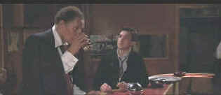

| Round
Midnight/B+,B |
| Warner/1986/131/ANA
2.35 |
You've gotta believe director Bertrand Tavernier understands jazz. His
fictionalized look at a legendary tenor sax player's last burst of creative energy in the late
1950's moves at a musical pace, almost echoing the nature of the jazz compositions that dominate
the film. The musicianship of the cast informs the film with an extra layer of authenticity.
 |
| Beer bonding. ©Warner |
Tavernier crafts the story of fading musician Dale Turner and worshipper
Francis Borler almost like a romance. Francis, the jazz lover, finds Turner playing at a local
Paris club, the Blue Note. He's practically a prisoner of the friends that brought him there from
the States to perform. Turner may dominate the sax with rare beauty, but he is dominated by demon
rum. The relationship of Turner and Borler begins with the purchase of a casual beer and evolves
through Borler's determination and Turner's needs. Every scene is commented upon by either the live
jazz performances or the background score that was supervised by jazzman Herbie Hancock.
The screenplay by Tavernier and David Rayfiel is invested with a rich
knowledge of the material. The character rhythms and idiom of the people and times is perfect.
Thrown away details like Tavernier's sly homage to the wonderful Red Shoes slips into a
conversation as naturally as these jazzmen play the notes of the music. There's probably more jazz
playing and less story telling than I care for, but the witty humor and charm of Dale Turner is
constantly on display, and it is indeed very special. The, dark, moody photography of Round
Midnight is an other reverberation of the jazz theme.
Dexter Gordon, a Parisian jazzman, plays Dale Turner with remarkable
candor. If you get by the fact that it's difficult to understand his slurred delivery of dialogue,
it's easy to forget that this is an actor giving a performance. Under Tavernier's baton, Gordon
plays it more like he's part of a documentary. Tiny Francois Cluzet stands in the shadow of the
towering Gordon. Cluzet has a fawning energy as Francis Maybe Tavernier undermines Cluzet a bit
with a few too many coy reaction shots of Francis, but overall Cluzet's determined style suits the
character.
Dark films often offer up transfer challenges, but this Warner DVD stays
in tune with the material. Shadow detail is very good. Blacks are deep and luscious, and the skin
tones of the African Americans are offered up in a graceful range. The image is sharp throughout
the presentation, though there were a couple of instances of jumpy focus. These, happily, were very
brief and very minor. The music really flows in this Dolby Digital 5:1 mix. The throatiness of the
horns are well preserved. There's lots of air around the jazz notes floating through the front
stage of the home theater. The surround effects are fairly muted, but the mix is dominated by the
music, delivered with consistent polish, and the dialogue. White English titles are provided over
the image to translate the fair amount of French dialogue.
|
|
|
|

Selections from the Feature Archive
include articles on Akira Kurosawa, Frank
Darabont, Blonde Bimbos, Hollywood Street Gangs, or Vietnam: The
Hollywood Pariah, and many more....
Transferring Zoetrope's Vision

American Zoetrope's Technical Director Kim Aubry talks about bringing the studios product out in
the best light. Click on the image for the interview.

Ghost Dog: Way of the Samurai

Ancient Japanese samurai tradition compared to new world Italian
mobsters filtered through the imagination of Jim Jarmusch. Forest Whitaker is outstanding.

The
Movie Poster Archive includes extensive poster images from the films of stars like Susan Hayward,
Kirk Douglas, Katharine Hepburn and many more. Our featured star is Frank Sinatra.

Click on the DVD MIA symbol for
profiles of DVDs missing in action.
Add films to the DVD MIA Master List by filling out
a simple form. Click Here |